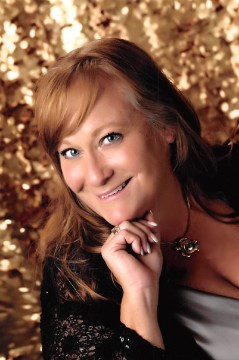

Tania Schmidt-Alpers
In addition to being on the Board of Directors of Surf Station Foundation, Tania is currently serving on the Florida Bar Domestic Violence Committee, the Florida Bar Children's Issues Committee, the Board of Directors of Girl Scouts of Gateway Council, and is a current member of the St. Johns Family Law Advisory Group. In 2016 and again in 2017, Tania was recognized by the American Institute of Family Law Attorneys as one of the "10 Best Attorneys" for Florida. Tania closed her private law practice to work in-house with Betty Griffin Center, continuing to represent victims of domestic and sexual violence in civil legal proceedings. Tania has been active in systemic advocacy through Pro Bono appellate cases resulting in the creation of new case law for survivors of domestic, sexual and dating violence throughout the State of Florida. This is truly her passion and life's work.